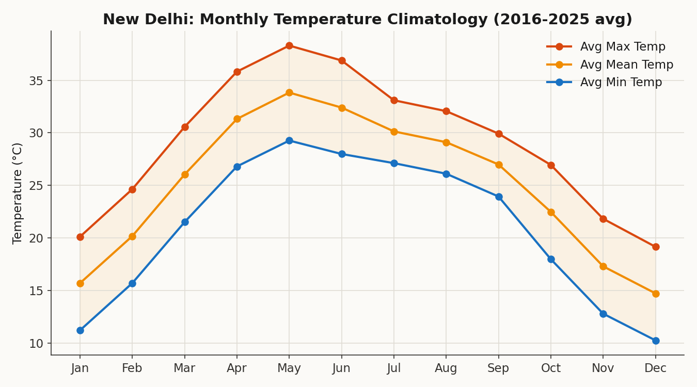
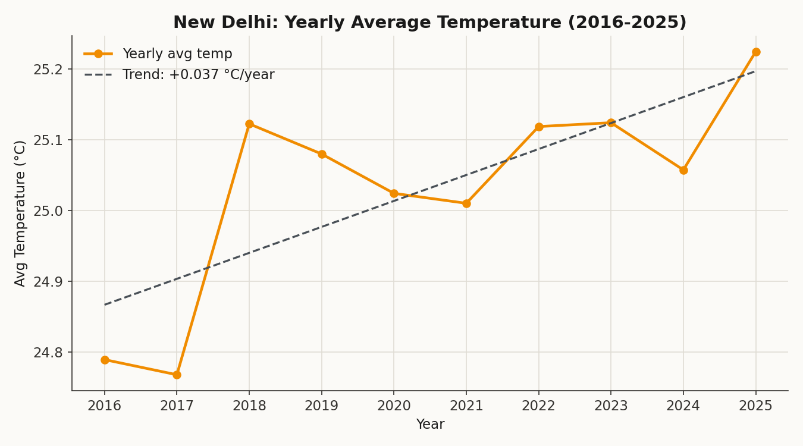
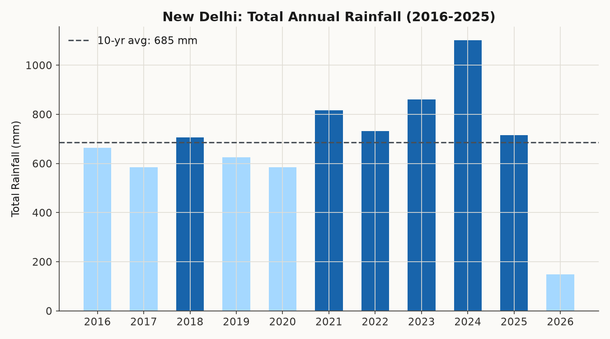
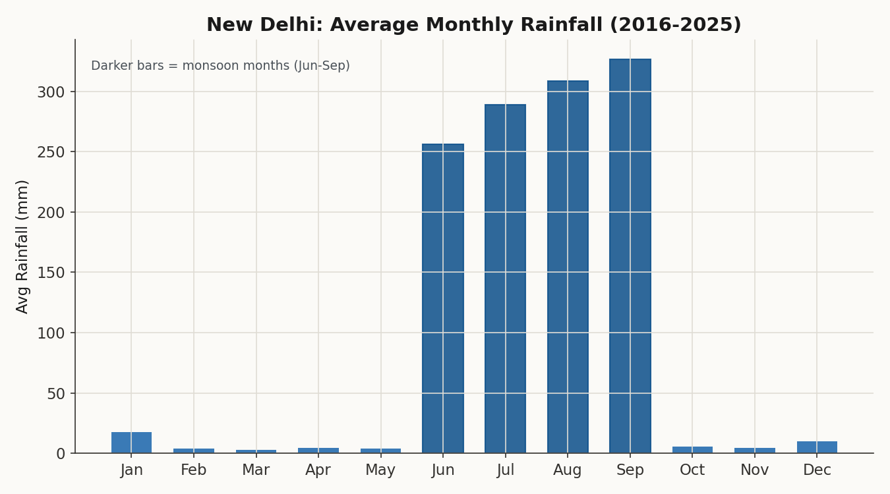
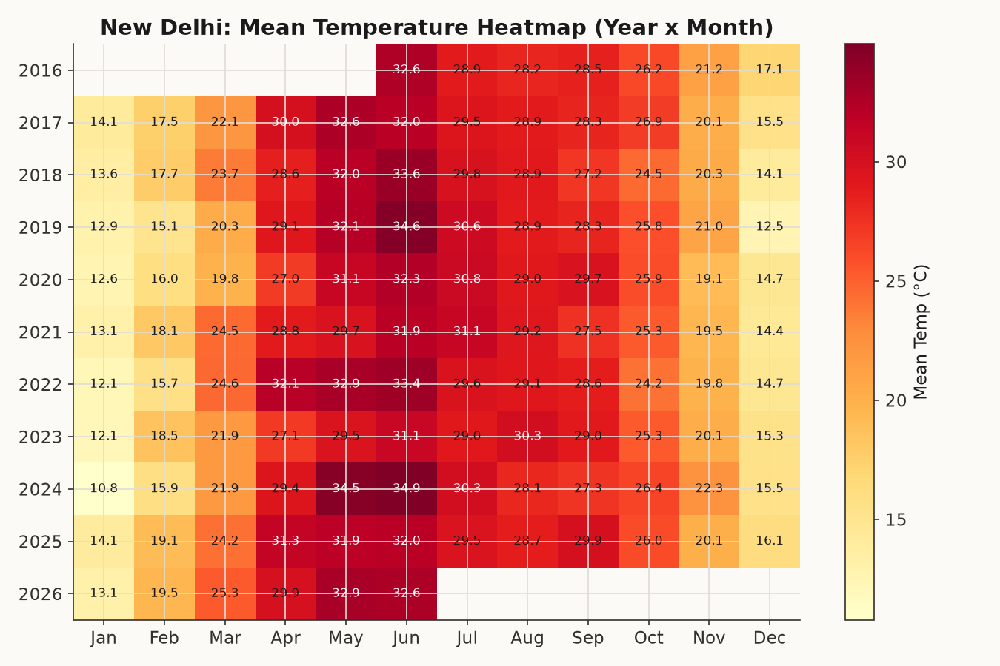
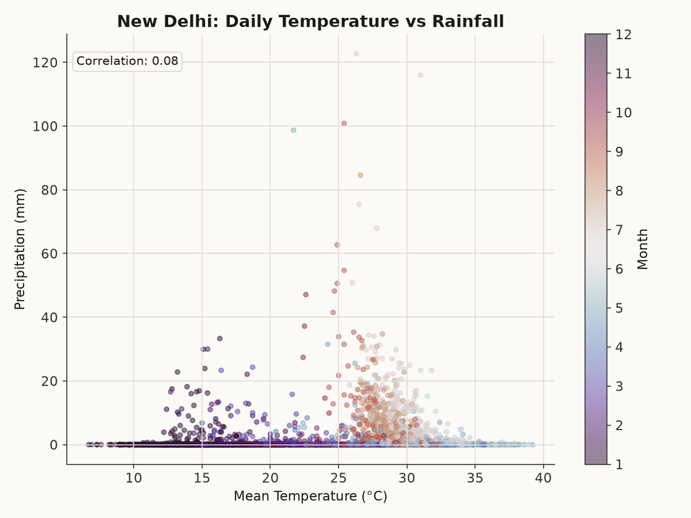

A ground-up analysis of a decade of daily temperature and rainfall data for New Delhi — built to answer one question: how stable is the city's climate really, year over year?

Average max, mean, and min temperature by calendar month — May is the hottest month, slightly ahead of June, with monsoon clouds (Jul–Sep) bringing temperatures down a few degrees before winter sets in.

A gradual warming trend across the decade, though year-to-year noise is larger than the trend itself.

Some years cleared 1700mm; others stayed below 1000mm — a reminder of how unpredictable a single monsoon season can be.

June through September alone account for the overwhelming majority of the city's annual rainfall.

Every month, every year, at a glance — useful for spotting subtle warming creeping into specific months over time.

Each dot is one day, colored by month. Rain clusters at moderate-to-warm temperatures during monsoon months (orange/pink) — confirming the weak overall correlation hides a strong seasonal pattern.
Run it yourself:
pip install -r requirements.txt python src/fetch_data.py python src/clean_data.py python src/analyze.py python src/visualize.py